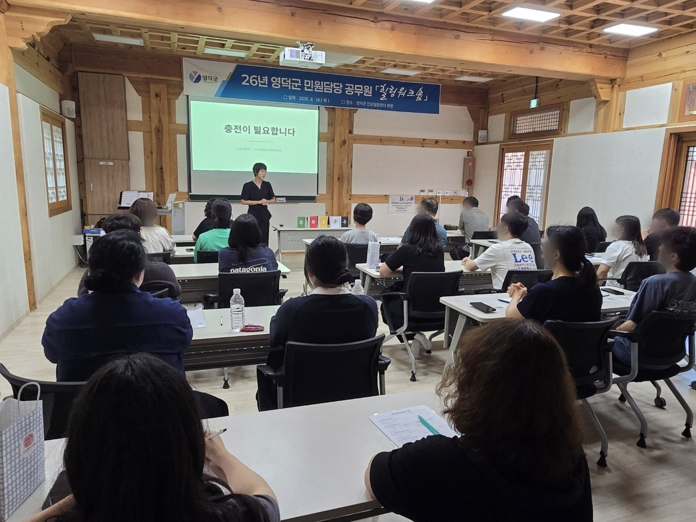

01
진단이 아니라 설명
“나는 왜 이럴까”를 탓이나 숙명이 아닌 기질의 비율로 설명합니다. 이해가 되면 바꿀 수 있는 것과 받아들일 것이 갈립니다.
YOONISE · LECTURE & WORKSHOP
공공기관 · 지자체 · 기업 맞춤형 오행 웰니스 특강
사주·명리·운세 강의 — 타고난 여덟 글자의 오행 비율로 기질과 스트레스 반응을 읽고, 일상에서 바로 쓰는 회복 루틴으로 옮기는 사주명리 웰니스 강의입니다.
기업 특강·임직원 웰니스, 지자체·공공기관·도서관·문화센터 강의, 소그룹·임원 명리학 특강까지. 사주와 명리를 ‘점’이 아닌 내 삶의 언어로 번역하는 시간을 만듭니다.
경북신문 『윤이세의 생활 사주명리』 연재 · 창암명리학회 수석 학술이사공공기관·지자체 특강 출강 — 울산광역시교육청 · 영덕군청 민원처리과 등
신문 연재 · 학회 직함 · 공공기관 출강
교육 현장과 민원 창구에서 실제로 진행한 강연을, 우리 조직의 언어로 다시 만들어 드립니다.

01 · WHY
사람은 기운의 균형이 흔들릴 때 늘 같은 자리에서 넘어집니다. 오행(목·화·토·금·수)은 그 자리를 짚어 주는 다섯 개의 눈입니다. 생활 사주명리라는 이름으로, 명리학을 교양과 웰니스의 언어로 다시 썼습니다.
01
“나는 왜 이럴까”를 탓이나 숙명이 아닌 기질의 비율로 설명합니다. 이해가 되면 바꿀 수 있는 것과 받아들일 것이 갈립니다.
02
과로·회피·과잉 걱정. 사람마다 무너지는 방식이 다릅니다. 내 오행이 부족할 때 튀어나오는 반응을 미리 알고 대비합니다.
03
같은 말도 다르게 들리는 이유를 오행의 온도 차이로 풀어 냅니다. 갈등을 사람 탓에서 결의 차이로 옮겨 놓습니다.
“사주는 점이 아니라 내 삶의 지도입니다.”
미래를 단정하지 않습니다. 선택의 순간에 손에 쥘 수 있는 지도로만 읽습니다.02 · PROGRAMS
대상과 시간에 맞춰 한 가지 주제를 깊게 또는 두 주제를 이어서 구성합니다. 아래는 가장 많이 요청받는 기본형이며, 사주명리 강연 섭외 시 이 중에서 고르셔도 되고 새로 맞춰도 됩니다.
조직 안의 ‘말이 통하는 사람’과 ‘늘 부딪히는 사람’을 오행의 온도 차이로 풀어 봅니다. 개인별 스트레스 반응을 알고 회복 루틴을 하나씩 정해 가는 실습형 특강입니다.
경북신문에 연재 중인 『윤이세의 생활 사주명리』의 흐름을 그대로 따라가는 교양 강연입니다. 어렵게 느껴지던 명리 용어를 일상의 언어로 바꿔, 처음 듣는 분도 끝까지 앉아 있게 만듭니다.
참석자의 생년월일을 미리 받아 한 사람 한 사람의 오행 프로파일을 준비해 갑니다. 개인의 결을 짚고, 그 사람들이 한 팀이 될 때 어디가 맞물리고 어디가 부딪히는지까지 이야기합니다.
🔒 맞춤형은 참석자 생년월일을 강연 준비 목적으로만 받고, 강연이 끝나면 폐기합니다. 사전에 동의 절차와 수집 범위를 함께 정합니다.
하루에도 수십 명의 감정을 받아내는 민원 응대 담당자를 위한 힐링 특강입니다. 영덕군청 민원처리과 특강에서 다듬은 내용으로, 감정노동으로 타는 기운을 오행의 언어로 설명하고 응대 후 스스로를 회복하는 루틴을 함께 만듭니다.
·강의 비용은 기관·기업 규모, 인원 및 일정에 따라 별도 협의합니다. 예산 범위를 알려 주시면 그 안에서 구성을 맞춰 드립니다.
03 · LECTURER
윤이세
사주명리학자 · 명리학 강사 · 오행 웰니스 큐레이터 · 윤이세사주 대표
경북신문에 『윤이세의 생활 사주명리』를 연재하는 사주명리학자이자 창암명리학회 수석 학술이사입니다. 점(占)으로 소비되던 사주를 일상의 언어로 옮겨, 오행을 기질·관계·회복의 언어로 다시 쓰는 일을 하고 있습니다.
부산 전포동에서 상담실을 운영하며, 같은 이야기를 강연장에서 더 크게 나눕니다. 울산광역시교육청, 영덕군청 민원처리과를 비롯한 공공기관·기업 특강에서 쌓은 자리 경험으로, 어려운 술어 대신 듣는 사람의 자리에서 출발하는 설명을 합니다 — 그것이 윤이세의 강의 방식입니다.
04 · FOR WHOM
사주 강의·명리학 특강·운세 강의·웰니스 강의를 같은 시간에 섞지 않고, 그 자리에 필요한 것만 골라 담습니다. 기업 HR·교육 담당자, 지자체·공공기관 교육 담당자(민원처리과 포함), 문화센터·웰니스 기획자가 바로 판단하실 수 있도록 나눠 두었습니다.
임직원 웰니스, 조직 소통 강의, 스트레스 관리 교육. 신입·관리자·전 직원 어느 층에도 맞춰 말할 수 있습니다.
지자체 강의, 공공기관 특강, 도서관 특강, 문화센터 강의. 주민 평생학습과 인문학 프로그램에 맞는 교양 강좌로 구성합니다.
오행 웰니스 강의, 오행 테라피, 마음챙김 프로그램. 향·색·호흡·습관으로 옮기는 실습형 세션입니다.
임원 워크숍, 리더 그룹, 가족·친목 모임, 1일 클래스. 참석자별 오행 프로파일을 준비해 가는 맞춤 명리학 특강입니다.
📍 부산 사주 강의·부산 명리학 강사와 부산·울산·경남(부울경) 기업 강의 요청이 가장 많고, 경남 특강은 물론 전국 출강도 가능합니다. 온라인(화상) 강의도 진행하며, 사주명리 강연 섭외는 일정이 확인되면 바로 확정됩니다.
05 · FAQ
06 · CONTACT
사주명리 강연 섭외는 일정과 형식만 알려 주시면 됩니다. 그 자리에 맞는 구성과 견적을 함께 제안해 드립니다.
·강의 비용은 기관·기업 규모, 인원 및 일정에 따라 별도 협의합니다.
함께 알려 주시면 좋아요